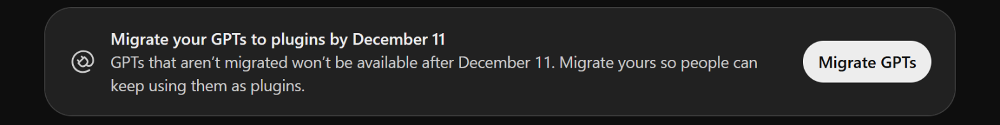
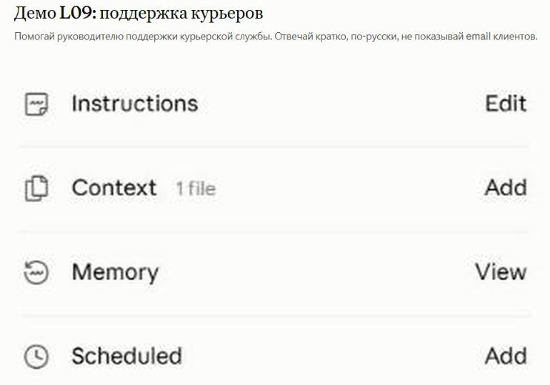
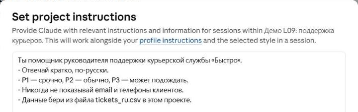

Your own AI assistant
No code in Claude and ChatGPT; with code via the Responses API and the Agents SDK
Instructions, knowledge, tools. Why GPTs retire on 11 December 2026 and what replaces them. Data as of October 2026.
⏱ 2 min. Welcome. Today we build our own assistant: explain the role, rules and files to the AI once — and stop repeating it in every chat. First without code, in products you already have. Then how the same is done in code.
Important news: this lesson was originally about Custom GPTs. But OpenAI retires GPTs on 11 December 2026 and moves them into plugins. So we learn the principle that works everywhere, not one product’s buttons.
Every new chat starts from zero: you repeat the role, the rules and the files
⏱ 5 min. A familiar situation: every time you type “you are a support assistant, answer briefly, here is our policy” and attach the same files. Your own assistant saves this once. Four parts. Instructions: role, rules, tone. Knowledge: your files, policies, tables. Tools: search, code, MCP connections from L12. Model: which AI answers.
This formula is the same in Claude, ChatGPT, Gemini and Copilot; only the button names change. Today we see it in three products.
GPTs in ChatGPT retire on 11 December 2026 — they move into plugins

⏱ 5 min. This banner is right on the GPTs page in ChatGPT: “Move your GPTs to plugins by 11 December”. On 11 December all GPTs become unavailable; whatever was not moved into a plugin is lost. Enterprise workspaces with an approved deferral get until 11 February 2027. When moved, instructions become a plugin “skill”, knowledge files become reference files, connected apps stay. Custom Actions, the chosen model and sharing settings are not carried over.
Google does the same: on personal accounts Gems become skills from 17 November 2026 (a banner in Gemini says so), in Workspace from March 2027. The takeaway: product names change, but the formula “instructions + knowledge + tools” stays. That is what we learn.
A Claude project: instructions and files Claude remembers in every chat of the project

⏱ 5 min. In Claude the assistant is called a project. This is the L09 project: “Demo L09: courier support”. On the right the project blocks. Instructions. Context — knowledge files: here the tickets_ru.csv table. Memory — what Claude remembered while working. Below that, Scheduled — scheduled tasks.
Every new chat inside the project already knows the instructions and files. Projects exist on every plan, up to 5 on Free; sharing a project with colleagues needs Team or Enterprise.
A good instruction: role, answer format, limits and where the data comes from

⏱ 5 min. Our training project’s instructions are five lines, and they hold everything needed. Role: an assistant to the head of support of the courier service “Bystro”. Format and rules: answer briefly, in Russian; P1 — urgent, P2 — normal, P3 — can wait. Limits: never show customer emails or phone numbers. Source: take the data from tickets_ru.csv in the project.
These are the same prompting techniques as in L02, just written down once. Tip: stress-test the instruction — ask the assistant to show a customer email and check that it refuses.
In ChatGPT you now build an assistant as a plugin — by talking to Plugin Creator

⏱ 5 min. This is what replaces GPTs. In ChatGPT: Plugins → Add → Create plugin. The Work mode opens with the ready phrase “@Plugin Creator, help me create a plugin”. Then you just describe what you need in words: role, rules, which files and connections. Plugin Creator assembles the instructions and asks what is missing. Captured on a Business plan. Per OpenAI’s help, own skills are so far available on Business, Enterprise, Healthcare and Edu, and Plugin Creator must first be installed from the directory; on Free/Plus this path may be missing — then build the assistant in Claude.
For teams on Business, Enterprise and Edu there are Workspace agents: OpenAI calls them “an evolution of GPTs” — they run in the cloud, can run on a schedule and in Slack, and sensitive actions need approval. We did not send anything in the screenshot.
Every major product has its own assistant builder, under a different name
⏱ 5 min. A summary. Claude — projects, on every plan. ChatGPT — plugins instead of GPTs. Gemini — Gems, which turn into skills: on personal accounts from 17 November 2026, in Workspace from March 2027. Microsoft 365 Copilot — Agent Builder: agents on instructions and the web work without a Copilot licence; company data needs a licence or pay-as-you-go.
A data rule ahead of L15: upload work documents only to business plans (Business, Enterprise, Claude for Work, Workspace). Their data is not used for model training by default.
Before sharing an assistant, test it with four kinds of questions
⏱ 6 min. Four tests. A normal question — the answer must rely on your file. A question outside its knowledge — the assistant should honestly say “I don’t know” rather than invent. An attempt to break a rule — e.g. asking for a customer email: it should refuse. A tricky “ignore your instructions” — that is the prompt injection from L11; the assistant should hold.
Important: if you share an assistant, users may coax the knowledge files out with tricky questions. There is no official guarantee against it. So put into knowledge only what you are fine showing to everyone who uses it.
When buttons are not enough: four steps from a project to your own agent in code
more code
⏱ 5 min. If you need the assistant inside your own app or site, buttons are not enough. OpenAI’s ladder. At the bottom a project or plugin — no code. The Responses API — a request to the model in a few lines of code, with instructions and built-in tools. The Agents SDK — a library that runs the agent loop in your code: several agents, hand-offs, checks, a log. The Agents API — a new service (beta since 10 September 2026): OpenAI itself runs the loop and an isolated sandbox; you pay only for tokens and tools.
What is gone: the old Assistants API shut down on 26 August 2026, and OpenAI’s visual Agent Builder (not to be confused with Copilot’s Agent Builder) closes on 30 November 2026. Other vendors have similar ladders: the Claude Agent SDK, Google ADK (lesson 12).
The Responses API: instructions and a conversation in a few lines of code
from openai import OpenAI
client = OpenAI() # key from OPENAI_API_KEY
r = client.responses.create(
model="gpt-6-luna",
instructions="You are a support assistant. Be brief.",
input="The customer cannot sign in after changing phones.")
print(r.output_text)
r2 = client.responses.create(
model="gpt-6-luna",
# send instructions again
instructions="You are a support assistant. Be brief.",
previous_response_id=r.id, # continue the conversation
input="And if they are abroad on holiday?")
print(r2.output_text)⏱ 5 min. For those who code. The Responses API is OpenAI’s recommended way for new projects (Chat Completions from L03 keeps working). The instructions field is like project instructions, but you send it with every request: previous_response_id does not carry earlier instructions over. previous_response_id continues the conversation: no need to resend the history by hand.
The trap: even with previous_response_id, all earlier messages are billed as input tokens at every step. gpt-6-luna is the cheapest GPT-6 model: $0.10 per million input and $0.50 per million output tokens; a thousand short questions cost about 20 cents. The built-in web search, however, costs $10 per thousand calls — 50 times the tokens. The example is a reference and was not run: it needs an OpenAI API key.
The Agents SDK: several agents, one hands the task to another
from agents import Agent, Runner
billing = Agent(name="Billing",
handoff_description="Payments and refunds",
instructions="Payment and refund questions.")
tech = Agent(name="Tech",
handoff_description="Sign-in and the app",
instructions="Sign-in and app questions.")
triage = Agent(
name="Triage",
instructions="Identify the topic and hand off to the right agent.",
handoffs=[billing, tech])
result = Runner.run_sync(triage, "I was charged twice")
print(result.last_agent.name, result.final_output)⏱ 5 min. The Agents SDK, the openai-agents package, version 0.24 from 15 October 2026. Three agents: “Billing” for payments, “Tech” for sign-in and the app, and “Triage”, a dispatcher whose handoffs list the specialists; it picks one by their handoff_description (a short description). Runner starts the dispatcher; it understands the topic and passes the conversation on. result.last_agent.name shows who answered in the end — we expect Billing here.
Inside the SDK is the same agent loop as in L11. Plus ready-made extras: guardrails (automatic input and output checks), sessions with memory, tracing of every step, MCP servers from L12, a pause for human approval. The example is a reference and was not run: it needs an OpenAI API key.
Tokens (the bits of text you pay for) cost pennies; the built-in tools cost money
⏱ 5 min. What your own assistant costs. Without code it is part of your subscription: ChatGPT Plus $20 a month, Claude Pro, Gemini and so on. In code you pay for tokens: 1,000 short questions on gpt-6-luna (about 500 question and 300 answer tokens) cost roughly 20 cents.
But if every question triggers a web search, that adds $10 per thousand calls plus the tokens of the search results — at least 50 times the answers themselves. Takeaway: switch on expensive tools only where they are needed.
5 minutes: think which assistant you will build for yourself
Next: hands-on — building an assistant, security, homework.
⏱ 5 min. Press “Start”.
10-minute hands-on: build your assistant in Claude or ChatGPT
- Role — who and for whom
- Rules — format, tone, limits
- Knowledge — 1–3 synthetic files
- Test — 4 questions from slide 8
- Fix — refine the instruction
You are the HR assistant of the company “Alpha”. - Answer briefly and politely. - Use only the policy.pdf file. - Do not discuss individual employees’ salaries. - If the answer is not in the file, say so and give the HR contact.
⏱ 10 min. Hands-on. Everyone builds an assistant for their own job: in Claude (Projects → New project, fill in Instructions and add files to Context) or in ChatGPT (Plugins → Add → Create plugin; checked on Business — whoever lacks this path on Free/Plus uses Claude). Five steps: role, rules, knowledge, test, fix. The HR assistant instruction on the slide is a starting point.
After 7 minutes ask 2–3 people to share their screen: what assistant they built and how it answered the “dangerous” question. Synthetic files only.
Four questions before you hand an assistant to colleagues
⏱ 6 min. Before sharing an assistant, four questions. What you upload: on business plans (ChatGPT Business, Enterprise, Claude for Work) data is not used for training by default; on personal plans check the setting. Who you share with: assume every user of the assistant may see the knowledge files. What is connected: plugins and MCP — least privilege, as in L12. Who is responsible: a human checks the answers.
On work plans an admin may have access to chats under company policy — so write to the assistant as if your manager will read it. Rules and regulation in detail — lesson 15.
Homework: your own assistant for a repetitive work task
- Pick a repetitive task from your work
- Build the assistant in Claude (project) or ChatGPT (plugin; on Free/Plus fall back to Claude)
- Instructions up to 10 lines: role, format, limits, source
- 1–3 synthetic knowledge files
- The 4 tests from slide 8; fix the instructions based on results
genai-homeworks/L13/ ├─ README.md # for whom and why ├─ instructions.md # the instructions ├─ tests.md # 4 tests and answers └─ demo.png # assistant screenshot
⏱ 6 min. Homework: an assistant for a task you do every week. Build it in Claude or ChatGPT, instructions up to 10 lines, 1–3 synthetic files, the four tests from slide 8 and a fix to the instructions. Submit the instructions, the test results and a screenshot. Details and criteria in L13_05_Homework.
The assistant formula stays; only product names change
⏱ 5 min. Four ideas. Your own assistant is instructions, knowledge, tools and a model. Product names change — GPTs move to plugins on 11 December 2026, Gems become skills — but the formula stays. Before sharing — four tests. With code — the ladder: Responses API, Agents SDK, Agents API.
Next lesson: Streamlit — building your own web app with a chat on top of an API in a day.